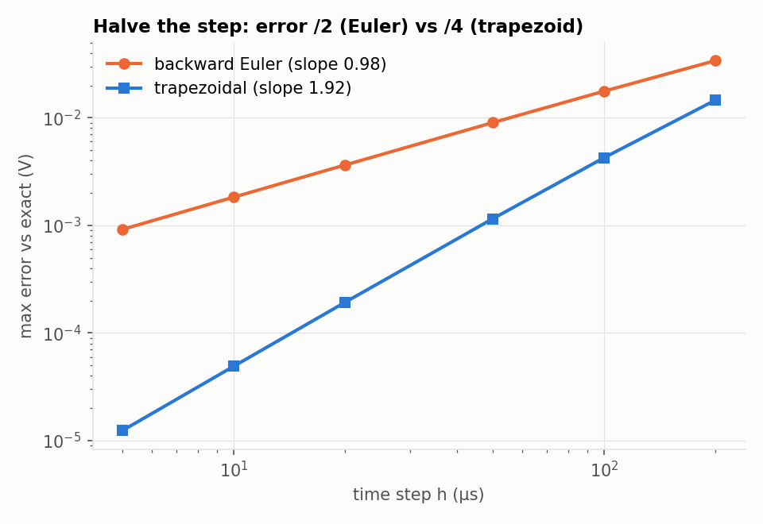

01Overview
Circuit simulators like SPICE, LTspice and ngspice are used every day in electrical engineering, but they are easy to treat as a black box. I wrote one from scratch to understand the core ideas: how a circuit becomes a matrix, how a diode's exponential gets solved, and how capacitors and inductors are stepped through time.
It supports resistors, capacitors, inductors, voltage and current sources (dc, pulse, sin, pwl), diodes, switches and voltage-controlled sources, plus .model and .tran, and the usual SPICE unit suffixes.
02Architecture
- Parse the netlist (netlist.c)
- DC operating point: Newton with gmin stepping
- Stamp every element into A x = b
- LU solve (solver.c)
- Converged? If not, re-linearize; after 100 tries, halve the step
- Save capacitor and inductor state, write a CSV row
Modified Nodal Analysis. Kirchhoff's current law at every node gives one equation per node. Voltage sources and inductors add one extra unknown each, their current. The result is a square linear system A x = b, and each element "stamps" a few numbers into A and b.
Companion models. For a capacitor, i = C dv/dt. Integrating over one step with the trapezoid area rule turns the capacitor into a conductance 2C/h plus a current source that remembers the past, so at every time point the circuit is purely resistive.
03Design decisions
| Question | Decision |
|---|---|
| Why the trapezoidal rule? | Halving the time step cuts the error 4× with the trapezoid rule but only 2× with backward Euler. Measured on a real circuit, the slopes are 1.92 and 0.98 (theory: 2 and 1). |
| What about sharp corners? | The trapezoidal rule "rings" at discontinuities, so one backward-Euler step is taken right after each source corner, as SPICE does. |
| Hitting the corners exactly? | Breakpoints: the time stepper lands exactly on every corner of the PULSE and PWL sources. |
| Keeping Newton stable? | SPICE-style junction-voltage limiting stops the diode equation from jumping into exponential overflow. |
| If Newton fails? | The step is retried at half the size. If the DC operating point fails, gmin stepping starts with large conductances to ground and removes them gradually. |
04Testing
| Test | Reference | Result |
|---|---|---|
| RC step response | exact solution | max error 4.9 × 10⁻⁵ V |
| Series RLC step (ζ = 0.1) | exact solution | overshoot 90.49 % vs 90.54 % theory |
| Half-wave diode rectifier | ngspice 47 | 0.004 % RMS difference |
| 48 V → 12 V buck converter | ngspice 47 | 0.009 % RMS difference, Vout 11.340 V vs 11.340 V |
| Order of accuracy | theory 2 and 1 | measured 1.92 and 0.98 |
| Unit tests | 36 / 36 passing |

05What I'd change
- The matrix is dense, so solving is O(n³). That is fine for hundreds of nodes; thousands would need a sparse LU.
- The step size is fixed, with halving on failure. Real SPICE also adapts the step from a local truncation-error estimate.
- Next: a MOSFET model, AC small-signal analysis, and the sparse solver.